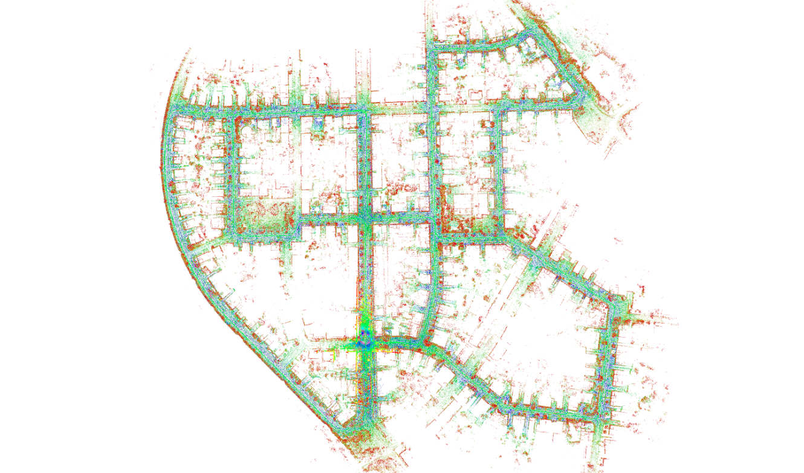

loam 是一个三维激光 SLAM 中很重要的一个方案，俗称 “loam 神器”。在这篇文章中我梳理了 loam 的算法流程，代码部分参考的是港科大 HKUST-Aerial-Robotics 组的实现版本：A-LOAM。
LOAM 简介
Paper:
J. Zhang and S. Singh. LOAM: Lidar Odometry and Mapping in Real-time.
Robotics: Science and Systems Conference (RSS). Berkeley, CA, July 2014. PDF
loam 的开源代码版本有很多… 作者自己开源出来的代码版本说实话有点惨不忍睹… 但是坊间也相应就有了很多修改版本。比如 1、2 等等，相对好了一些但还是不甚符合软件设计的思想…
本篇文章对应的 loam 源码采用的是港科大 HKUST-Aerial-Robotics 组的实现版本：A-LOAM。该版本采用的是通过 Ceres-solver 的自动求导来做非线性优化的，所以从优化部分来看相对于源代码省去了优化过程中实现的公式推导的流程，相对简介了一些；但是另一方面来看代码中还是存在不少冗余的部分…
贴一张 A-LOAM 在 kitti 数据集上的效果图 (来源 A-LOAM github 主页)：

LOAM 流程
loam 的一个很重要的思想，就是激光雷达获取到的一帧点云，由于高速运动产生的畸变，会对激光里程计的结果准确性造成很大的影响（所以代码中存在很多的空间 3D 点位姿变换的部分）；
- 这里的畸变是指一帧点云数据的产生点不在同一个位置；而一般算法默认一帧点云作为一次的观测数据，是在同一个点观测到的。目前大多的激光雷达还都是机械式的激光，扫描一圈是需要时间的，虽然一帧的时间很短，但是在高速运动过程中，这个畸变的问题就凸显出来了。
loam 的主要流程就是，首先对点云提取特征；然后通过当前帧与上一帧进行特征匹配得到高频低精度的 odometry 信息，这个过程中加入运动补偿来修复畸变；通过间隔 n 帧与当前地图进行特征匹配得到低频高精度的 odometry 的信息（这一步主要是计算量大的限制而选择低频）；然后通过上述两者之间的相互插值最后得到一个不错的激光里程计结果。而建图是通过估计出的每一帧的位姿，通过将多帧的激光特征点云基于位姿拼接，形成特征点云地图。
首先，LOAM 的代码流程主要由下面四个部分组成：
graph TD;
A("Scan Registration")-->B("Low-precision, High-frequency Laser Odometry");
B-->C("High-precision, Low-frequency Laser Mapping");
C-->D("Frequency boost-up and more accurate Odometry");Scan Registration
-
首先根据激光雷达的扫描模式将点云进行归档，比如若采用 vlp-16 雷达的话，将一帧的点云 (Sweep) 所有点对应到 16 条线 (scan) 上。
这部分的代码对应
scanRegistration.cpp的 第160-241行 for 循环的内容。其中有一些实现的小细节：-
关于判断某一点是位于哪一条线上，这个是根据雷达的硬件扫描模式而定的（所以如果要实现基于不同雷达硬件的 loam 的话，这部分是要替换一下的哈，loam 目前也有实现的很多的不同的版本，比如 loam_back_and_forth、loam_continuous、loam_velodyne、loam_livox 等等）。比如 vlp16 的话就要去查看 vlp16 的用户手册里面的参数（垂直分辨率、水平分辨率、扫描周期等参数）。所以说代码中的第
169-205行里的参数就是根据 vlp16 雷达的用户手册得到的。关于这个，这个知乎 链接 的 5.1 节线束模型 里讲得比较详细。 -
里面还有一个关于处理点云顺序的小细节，就是看到的那些加减 2 的处理。
首先，默认每次雷达扫描的开始都是从 0° 开始的，对于水平角度，每个角度对应一个扫描的相对时间， 这在后续的运动补偿中用来去掉点云的畸变。但是雷达里的电机一直处于高速旋转中，没有一个复位的过程，雷达只在电机旋转到接近 0° 时记下当前对应激光点的精确坐标。同样，结束的位置，也不一定时 0°，都是在 0° 周围。所谓这时候要进行归一化到一个 2 的区间。对应代码
208-236。
-
-
第二步进行曲率计算，为下一步特征提取做准备。这一步的做法是选取了前后各 5 个点分别与自己计算距离并累加。这部分的对应代码
scanRegistration.cpp的 第256-266行 for 循环的内容。 -
第三步开始选取特征点云并合成特征点云。为了使得约束均匀分布，沿水平方向平均分为几块点云区域。将块内的点按曲率大小排列，设置一个曲率阈值 t， 比如 0.1，来区分边缘点和平面点。我们设定一个每块的最大点数 N。
边缘点 sharp 选择条件:
-
从曲率最大的点开始，最多选择 N 个，只有曲率大于 t 的点才能被选取
-
若一个点周围五个点中已有点被选为边缘点，跳过这个点，从曲率更小的点中选取
平面点 flat 选择条件:
-
从曲率最小的点开始，最多选择 N 个，只有曲率小于 t 的点才能被选取
-
若一个点周围五个点中已有点被选为平面点，跳过这个点，从曲率更大的点中选取
上述的具体参数设置见代码和论文。
特征选取的过程中还处理了下面两种情况：

最后将选出的特征集合成特征点云。在实现的过程中，针对 sharp 和 flat 分别提出了两组点云 cornerPointsSharp/cornerPointsLessSharp、surfPointsFlat/surfPointsLessFlat。其实 less 就相当于是 N 值取的较大一些，也就是多了一些 sharp/flat 程度低一些的点。然后在匹配的过程中，是通过当前的 cornerPointsSharp/surfPointsFlat 去匹配 less 的，也就是少数去匹配多数。这个考虑其实特别好，因为在不同位置观测到的曲率是不一样的，增加了系统的鲁棒性。
上述的代码实现在
scanRegistration.cpp的第282-399。代码中的设置即为分为了 6 块区域，曲率阈值为 0.1。cornerPointsSharp 选了 3 个，cornerPointsLessSharp 选了 21 个。所以一帧 16 线的点云共提取 个角点。flat 的选择有点不太一样，见代码346-398行，其实 surfPointsFlat 选取了 个角点，然后 surfPointsLessFlat 把所有曲率满足 flat（小于设定的那个阈值）、不是 corner 的点给塞了进去，然后又加了一个下采样的处理。一帧特征点云的效果图（白色为 sharp，彩色为 flat）：
cornerPointsSharp 和 surfPointsFlat：

cornerPointsLessSharp 和 surfPointsLessFlat：

-
至此，得到的四组点云将作为高频低精度的 laserOdometry 的输入。
Low-precision, High-frequency Laser Odometry
这一部分的主要功能有两个：
-
特征点云的去运动畸变
根据点云中每个点的扫描时间（存储在 intensity 中，为 SCANID 整数部分 + time 小数部分）、其他方式获取的里程计信息（有 imu 的话用 imu，没的话用匀速运动模型，当然其他的也可以比如轮子里程计），然后将这一帧中所有点转换到起始点的坐标系下。
-
高频低精确度的 odometry
这一步通过当前帧点云与上一帧点云的对齐的实现的。具体算法：
-
首先进行特征匹配和构建 loss。根据论文中的算法：
- 找出本帧 corner 特征与上一帧的最近邻且不在一条扫描线上的两个特征点，然后上一帧的两个点组成直线，求出本帧特征点在空间中对于这条直线的距离，构成一项 loss。
- 找出本帧 flat 特征，然后找出上一帧最近邻的一个、何其同线最近邻的一个和不在一条线上最近邻的一个，三点确定出一个平面，然后求本帧特征点与其的距离，此项也构成一个 loss。
下图是论文中的示意图（前面的一根线就是一根线 SCAN；由于论文采用的是 2D 雷达 + 摆动的方式，所以前面的线束长这个样子，对应 vlp16 就是平行的）。

-
有了这些 loss，就可以构建最小二乘优化了。将这些距离对位姿进行求导。loam 论文中给出了导数形式，并提出通过 LM 法进行优化；loam 原代码中作者手写了优化过程但是使用的是高斯牛顿… 并且论文和代码的被求导对象有点不一样… 这个暂就不说了。
A-loam 是拿 Ceres-solver 的自动求导进行优化的，而没有使用解析导数。所以这些求导过程就可以先略过了。在 Ceres-solver 中构建基于上面的 loss 构造方式来构建观测误差即可。
-
至此，由于两帧之间的计算量其实还是比较小的，所以可以做到一个比较高频的 odometry（10hz）。但由于只有当前帧与上一帧的联系，所以这个一是精度比较偏低，并且长时间了会有 drift。所以单纯由这个计算得到的 odometry 信息实用性 (aloam 代码中的 /laser_odom_to_init 话题) 并不是很强，并且我们通常选择使用根据 map 对齐得到的低频高精度 odometry 与这个高频低精度 odometry 两者插值得到的 odometry 信息，即 A-loam 代码中的 /aft_mapped_to_init_high_frec 话题。
所以，这一步更大的意义是将每一帧内的点云进行去运动畸变，这个给高速运动下精度的提高带来了很大的好处。当然，这些 odometry 的作用还有如下：
- 在 laserMapping 中用于位姿的预测。
- 为 laserMapping 输出的低频 odometry 提供插值，以获得高频 (10HZ) 的 odometry。
Ps: less 点云中好像未参与去畸变。然后 A-LOAM 的代码中，后面 map 匹配的时候，采用的是 less 点云，map 建图过程中，插入的也是 less！
High-precision, Low-frequency Laser Mapping
这一步就是，如果当前帧被选择用来与已经构建在 map 中的特征进行匹配的话（由于计算实时性的影响，在计算力达不到的场景下不可能每一帧都进行 map 的匹配，所以会对这一过程进行一个抽样，比如 5 帧一匹配），通过这一帧在 map 中的配准（与上面 laserOdometry 方法一样，只是去匹配的目标不一样了，这次是匹配的是已经构建在 map 中的、且在视域范围内（laserCloudValidInd）的立方体中的点。
这次的匹配得到更加精准的位姿，然后继续根据这一位姿，将后面帧的特征点云继续给加入到 map 中。
上面的这两步骤反复进行即可。这样的话就完成了建图（特征地图）和一个低频精准的 odometry 信息了。
对于 Mapping 这一步具体的实现，
- map 其实分为 corner map (sharp) 和 surface map (flat) 这两种特征的地图。
- 有一个空间划分的过程，将新获得的 corner 和 surf 激光点分别映射到每个立方体 laserCloudCornerArray 和 laserCloudSurfArray。具体划分的步骤代码写的也太啰嗦了吧… 代码
laserMapping.cpp文件第323-529行，然后选出用于这一帧匹配的 map 中的视域内的 (按照立方体，其实圆柱形、球形等都可以) 划分的点，代码531-537行。 - 有了两堆用于匹配的点云，就按照之前步骤匹配就可以了。计算量大的原因是从 map 中选取的比较多 (也就是匹配的 target)。
Frequency boost-up and more accurate Odometry
最后一步是将两种高低频率结合起来。这一步是实现其实非常简单，插值就可以了。代码实现在 laserMapping.cpp 文件第 197-229 行，即 laserOdometryHandler 函数。